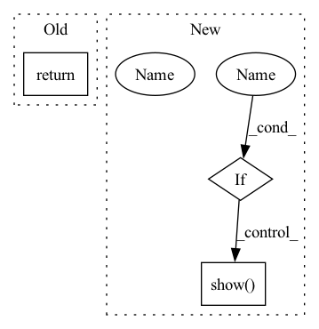

Pattern ID :37533
Before Change
else:
exp.save_to_file(os.path.join(self.path, f"{name}_{index}"))
return
def to_np(x) -> np.ndarray:
After Change
fig = as_pyplot_figure(exp, colors=colors, example_index=index, annotate=annotate)
if save:
plt.savefig(os.path.join(self.path, f"{name}_{index}"), bbox_inches="tight")
if show :
plt.show()
else:
exp.save_to_file(os.path.join(self.path, f"{name}_{index}"))
return figIn pattern: SUPERPATTERN
Frequency: 17
Non-data size: 3
Instances Fragment ID: 108074353
Project Name: atrcheema/ai4water
Commit Name: f835519dbdefab4c6614f59fed5b3e0ee3cdd884
Time: 2021-10-22
Author: ather_abbas786@yahoo.com
File Name: ai4water/post_processing/explain/_lime.py
M Class Name: LimeExplainer
N Class Name: LimeExplainer
M Method Name: explain_example(9)
N Method Name: explain_example(6)
M Parent Class: ExplainerMixin
N Parent Class: ExplainerMixin
M File Name: ai4water/post_processing/explain/_lime.py
N File Name: ai4water/post_processing/explain/_lime.py
M Start Line: 160
M End Line: 175
N Start Line: 146
N End Line: 189
Before Change
def similarity_plot(embedding, label):
return 0
After Change
plt.axis("off")
// plot
if show_fig :
plt.show()
return fig
Fragment ID: 108074352
Project Name: yueliu1999/awesome-deep-graph-clustering
Commit Name: d1692c202441c6961a5e075b21c4df27bdfca024
Time: 2021-12-11
Author: 41297969+YueLiu-coder@users.noreply.github.com
File Name: visualization.py
M Class Name: AnonimousClass
N Class Name: AnonimousClass
M Method Name: similarity_plot(4)
N Method Name: similarity_plot(2)
M Parent Class:
N Parent Class:
M File Name: visualization.py
N File Name: visualization.py
M Start Line: 54
M End Line: 55
N Start Line: 54
N End Line: 86
Before Change
if not show:
plt.savefig(os.path.join(self.path, f"{name}_{feature}"), dpi=300, bbox_inches="tight")
return
def scatter_plot_all_features(self, name="scatter_plot"):
draws scatter plot for all features
if isinstance(self.data, pd.DataFrame):After Change
shap.plots.scatter(shap_values[:, feature], show=False, **scatter_kws)
if save:
plt.savefig(os.path.join(self.path, f"{name}_{feature}"), dpi=300, bbox_inches="tight")
if show :
plt.show()
return
def scatter_plot_all_features(self, name="scatter_plot", save=True, show=False, **scatter_kws): Fragment ID: 108074355
Project Name: atrcheema/ai4water
Commit Name: bf5b25e0fa714b6e17d7ee19caed00fa3df06015
Time: 2021-10-22
Author: ather_abbas786@yahoo.com
File Name: ai4water/post_processing/explain/_shap.py
M Class Name: ShapExplainer
N Class Name: ShapExplainer
M Method Name: scatter_plot_single_feature(5)
N Method Name: scatter_plot_single_feature(4)
M Parent Class: ExplainerMixin
N Parent Class: ExplainerMixin
M File Name: ai4water/post_processing/explain/_shap.py
N File Name: ai4water/post_processing/explain/_shap.py
M Start Line: 478
M End Line: 481
N Start Line: 513
N End Line: 524
Before Change
if not show:
plt.savefig(os.path.join(self.path, name), dpi=300, bbox_inches="tight")
return
def decision_plot(self, name: str = "decision_"):
// https://towardsdatascience.com/introducing-shap-decision-plots-52ed3b4a1cba
raise NotImplementedErrorAfter Change
if save:
plt.savefig(os.path.join(self.path, name), dpi=300, bbox_inches="tight")
if show :
plt.show()
return
def decision_plot( Fragment ID: 108074339
Project Name: atrcheema/dl4seq
Commit Name: bf5b25e0fa714b6e17d7ee19caed00fa3df06015
Time: 2021-10-22
Author: ather_abbas786@yahoo.com
File Name: ai4water/post_processing/explain/_shap.py
M Class Name: ShapExplainer
N Class Name: ShapExplainer
M Method Name: _beeswarm_plot(6)
N Method Name: _beeswarm_plot(5)
M Parent Class: ExplainerMixin
N Parent Class: ExplainerMixin
M File Name: ai4water/post_processing/explain/_shap.py
N File Name: ai4water/post_processing/explain/_shap.py
M Start Line: 559
M End Line: 562
N Start Line: 620
N End Line: 630
Before Change
if not show:
plt.savefig(os.path.join(self.path, f"{name}_sortby_SumOfShap"), dpi=300, bbox_inches="tight")
return
def _get_shap_values_locally(self):
data = self.data
if not isinstance(self.data, pd.DataFrame):After Change
if save:
plt.savefig(os.path.join(self.path, f"{name}_sortby_SumOfShap"), dpi=300, bbox_inches="tight")
if show :
plt.show()
return
def _get_shap_values_locally(self): Fragment ID: 108074354
Project Name: atrcheema/dl4seq
Commit Name: bf5b25e0fa714b6e17d7ee19caed00fa3df06015
Time: 2021-10-22
Author: ather_abbas786@yahoo.com
File Name: ai4water/post_processing/explain/_shap.py
M Class Name: ShapExplainer
N Class Name: ShapExplainer
M Method Name: _heatmap(6)
N Method Name: _heatmap(5)
M Parent Class: ExplainerMixin
N Parent Class: ExplainerMixin
M File Name: ai4water/post_processing/explain/_shap.py
N File Name: ai4water/post_processing/explain/_shap.py
M Start Line: 522
M End Line: 524
N Start Line: 570
N End Line: 583
Before Change
shap.dependence_plot(feature, self.shap_values, self.data, show=False)
plt.savefig(os.path.join(self.path, name), dpi=300, bbox_inches="tight")
return
def force_plot_all(self, name="force_plot.html"):
draws force plot for all examples in the given data and saves it in an html
After Change
shap.dependence_plot(feature, self.shap_values, self.data, show=False, **kwargs)
if save:
plt.savefig(os.path.join(self.path, name), dpi=300, bbox_inches="tight")
if show :
plt.show()
return
def force_plot_all(self, name="force_plot.html", save=True, show=True, **force_kws):
draws force plot for all examples in the given data and saves it in an html Fragment ID: 108074338
Project Name: atrcheema/ai4water
Commit Name: bf5b25e0fa714b6e17d7ee19caed00fa3df06015
Time: 2021-10-22
Author: ather_abbas786@yahoo.com
File Name: ai4water/post_processing/explain/_shap.py
M Class Name: ShapExplainer
N Class Name: ShapExplainer
M Method Name: dependence_plot_single_feature(5)
N Method Name: dependence_plot_single_feature(3)
M Parent Class: ExplainerMixin
N Parent Class: ExplainerMixin
M File Name: ai4water/post_processing/explain/_shap.py
N File Name: ai4water/post_processing/explain/_shap.py
M Start Line: 426
M End Line: 435
N Start Line: 440
N End Line: 455
Before Change
if not show:
plt.savefig(os.path.join(self.path, f"{name}_{example_index}"), dpi=300, bbox_inches="tight")
return
def scatter_plot_single_feature(self, feature: str, name: str = "scatter", show=False):
shap_values = self.explainer(self.data)After Change
if save:
plt.savefig(os.path.join(self.path, f"{name}_{example_index}"), dpi=300, bbox_inches="tight")
if show :
plt.show()
return
def scatter_plot_single_feature(
self, feature: str, Fragment ID: 108074358
Project Name: atrcheema/ai4water
Commit Name: bf5b25e0fa714b6e17d7ee19caed00fa3df06015
Time: 2021-10-22
Author: ather_abbas786@yahoo.com
File Name: ai4water/post_processing/explain/_shap.py
M Class Name: ShapExplainer
N Class Name: ShapExplainer
M Method Name: waterfall_plot_single_example(5)
N Method Name: waterfall_plot_single_example(4)
M Parent Class: ExplainerMixin
N Parent Class: ExplainerMixin
M File Name: ai4water/post_processing/explain/_shap.py
N File Name: ai4water/post_processing/explain/_shap.py
M Start Line: 469
M End Line: 472
N Start Line: 486
N End Line: 507
Before Change
pt += np.array([d_x, d_y])
candidates.append(pt)
return np.unique(np.asarray(candidates), axis=0)
@staticmethod
def get_candidate_gt(target_candidate, gt_target):After Change
candidates.append(copy.deepcopy(pt))
candidates = np.unique(np.asarray(candidates), axis=0)
if viz :
fig = plt.figure(0, figsize=(8, 7))
fig.clear()
for centerline_coords in centerline_list:
visualize_centerline(centerline_coords)
plt.scatter(candidates[:, 0], candidates[:, 1], marker="*", c="g", alpha=1, s=6.0, zorder=15)
plt.xlabel("Map X")
plt.ylabel("Map Y")
plt.axis("off")
plt.title("No. of lane candidates = {}; No. of target candidates = {};".format(len(centerline_list), len(candidates)))
plt.show(block=False)
return candidates
@staticmethod Fragment ID: 108074362
Project Name: henry1iu/tnt-trajectory-predition
Commit Name: 158b8908496b1bcd8d780c31b641d395ef261a2f
Time: 2021-07-28
Author: liu.jb.henry@gmail.com
File Name: core/util/preprocessor/base.py
M Class Name: Preprocessor
N Class Name: Preprocessor
M Method Name: lane_candidate_sampling(3)
N Method Name: lane_candidate_sampling(2)
M Parent Class: object
N Parent Class: object
M File Name: core/util/preprocessor/base.py
N File Name: core/util/preprocessor/base.py
M Start Line: 139
M End Line: 158
N Start Line: 138
N End Line: 174
Before Change
if name is None: name = self.hru_definition
name = f"{len(self.hru_names)}hrus_for_{year}_{name}.png"
return easy_mpl.pie(fractions=vals,
labels=labels_n,
explode=tuple(explode),
autopct=autopct, shadow=shadow, startangle=startangle, textprops=textprops,After Change
plt.savefig(name, dpi=300)
if show :
plt.show()
return Fragment ID: 108074364
Project Name: atrcheema/ai4water
Commit Name: 5ee82e4013d39a4072476ba19ce9b9c5f973ac12
Time: 2022-10-01
Author: ather_abbas786@yahoo.com
File Name: ai4water/preprocessing/spatial_processing.py
M Class Name: MakeHRUs
N Class Name: MakeHRUs
M Method Name: draw_pie(6)
N Method Name: draw_pie(6)
M Parent Class: object
N Parent Class: object
M File Name: ai4water/preprocessing/spatial_processing.py
N File Name: ai4water/preprocessing/spatial_processing.py
M Start Line: 602
M End Line: 606
N Start Line: 599
N End Line: 612